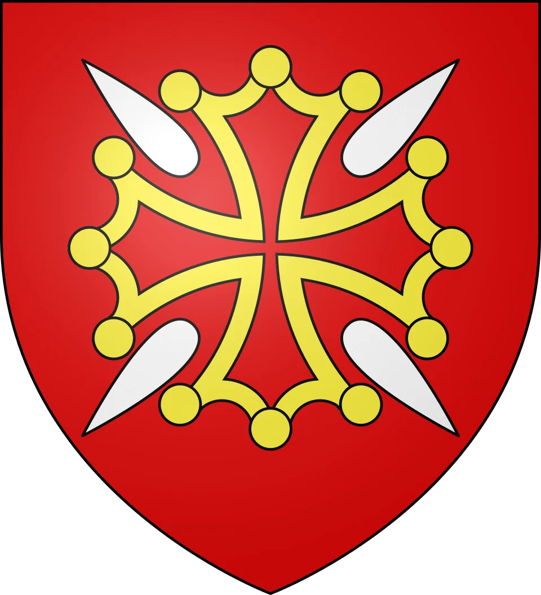
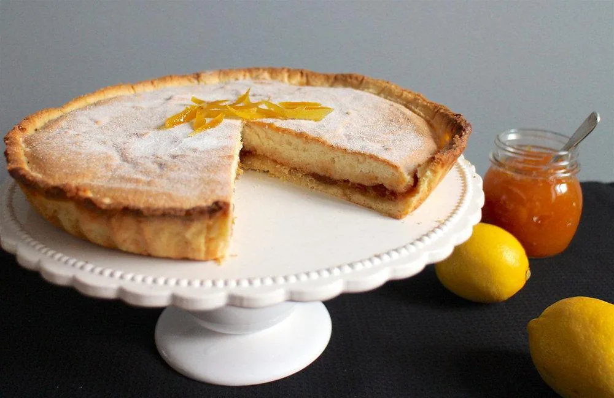

Un fond de pâte sablée, une couche d'abricot piquée de citron confit, un nuage d'amandes doré au four. Derrière ce gâteau tout simple se cache une fête des morts venue de l'Antiquité, une tradition oubliée entre les deux guerres et une renaissance orchestrée par les pâtissiers de Toulouse.
Selon la tradition toulousaine, le fénétra tire son nom des Feretralia, une fête des morts célébrée chaque année au mois de mars, à l'époque gallo-romaine. Ce jour-là, les familles de Tolosa se rendaient en procession à la grande nécropole qui s'étendait au sud de la ville, pour honorer leurs défunts. On y partageait des offrandes, on y organisait des jeux et des spectacles de rue. Le mot a glissé au fil des siècles, de Feretralia à « férétra », puis à « fénétra ».
Le souvenir de ce lieu est resté inscrit dans la ville : l'actuelle rue du Férétra, au sud de Toulouse, suit le tracé de l'ancien chemin qui menait à la nécropole.

Au XVIIIe siècle, la fête perd son caractère funèbre et prend des airs de carnaval. Le fénétra, lui, entre dans les maisons : aux XVIIIe et XIXe siècles, il fait partie des desserts des repas de fête et des déjeuners familiaux du dimanche. Riche en sucre, il se garde plusieurs jours hors du réfrigérateur, et l'on peut le grignoter jusqu'au milieu de la semaine.
Entre les deux guerres, la tradition s'éteint. Les pâtissiers cessent d'en faire, la fête disparaît du calendrier. La recette ne survit que dans quelques familles, qui la transmettent de génération en génération.
En 1963, Fernand Cousteaux, rédacteur en chef de La Dépêche du Midi, se bat pour relancer la fête : le Grand Fénétra renaît sous la forme d'un festival de danses et de musiques traditionnelles, chaque dernier week-end de juin. En 1970, le Comité des fêtes de la ville demande aux pâtissiers de lui redonner un gâteau. Un concours est organisé, avec un cahier des charges précis : il faut un gâteau de voyage, solide et qui se conserve, capable de porter le nom de Toulouse hors de la ville.
On ne cherchait pas un entremets fragile, mais un gâteau qu'on emporte dans sa valise : le cannelé de Bordeaux ou le nougat de Montélimar version toulousaine.
La recette de Christian Lacoste, qui remet le gâteau au goût du jour, devient la référence. L'Union des artisans pâtissiers de la Haute-Garonne dépose l'appellation « gâteau du Fénétra » et fixe sa composition : pâte sablée, marmelade d'abricots, écorces de citron confites et dessus aux amandes de type dacquoise.
Malgré ces efforts, le fénétra reste un secret mal partagé : l'office de tourisme lui-même reconnaît qu'il est plus connu des visiteurs, guidés par leurs livres de voyage, que des Toulousains. Quelques pâtisseries de la ville le proposent toute l'année.
Le fénétra réunit trois saveurs : la douceur fruitée de l'abricot, l'amertume légère du citron confit et le grillé des amandes. Il lui faut un vin un peu moins sucré que lui, avec assez de fraîcheur pour ne pas alourdir. Le vignoble de la région en offre plusieurs, à moins d'une heure de Toulouse.
Gaillac doux
AOP Gaillac · Tarn (81)
Le mauzac et le loin-de-l'œil, cépages locaux, donnent des notes de coing, de pomme cuite et de fruits secs qui répondent à l'abricot et à l'amande. Le voisin du fénétra, au sens propre : le vignoble est à 50 km de Toulouse.
Muscat de Rivesaltes
AOP · Pyrénées-Orientales (66)
Un vin doux naturel aux arômes d'agrumes, de fleurs blanches et d'abricot. Il souligne le citron confit et s'accorde avec la confiture sans la couvrir.
Pacherenc du Vic-Bilh moelleux
AOP · Gers (32), Hautes-Pyrénées (65)
Le petit manseng lui apporte une acidité vive et des notes de fruits exotiques et de fruits confits : un bel équilibre face au sucre du gâteau.
Blanquette de Limoux, méthode ancestrale
AOP · Aude (11)
Légèrement sucrée, peu alcoolisée et fine en bulles, elle allège le dessert. Idéale pour un goûter ou un fénétra servi en fin de grand repas.
Au sud de Toulouse, la rue du Férétra rappelle le chemin que suivaient les processions vers l'ancienne nécropole. Le gâteau et la rue portent le même nom, hérité de la même fête.
En 1970, le Comité des fêtes voulait un gâteau qui se transporte et se conserve, pour remplacer le pain traditionnellement offert pendant la fête et faire connaître Toulouse au-delà de ses murs.
Le fénétra classique est ovale. Rond, il ressemble à une tarte comme une autre ; ovale, on le reconnaît sur l'étal d'une pâtisserie toulousaine.
Le nom de Feretralia est celui que retient la tradition toulousaine. Les calendriers romains connus mentionnent surtout les Feralia, fête des morts de février : l'origine exacte du mot reste discutée.